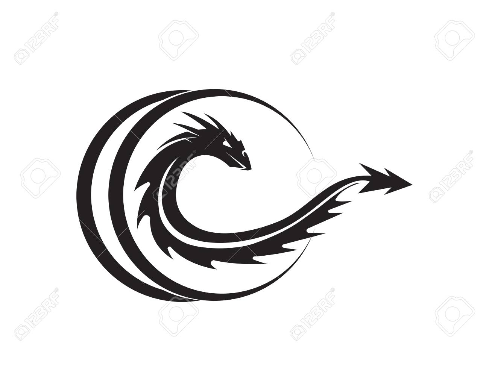

Hyperblog Tu blog
de cabecera
Este es el titulo atractivo e interesante del post
Y este es el párrafo de inicio donde vamos a explicar las cosas increíbles que se pueden hacer con ramas.

Pellentesque posuere feugiat erat, eget gravida odio condimentum ut. Aliquam quam nunc, consequat quis quam quis, rutrum eleifend felis. Aenean suscipit egestas pharetra.
suscribete y dale like